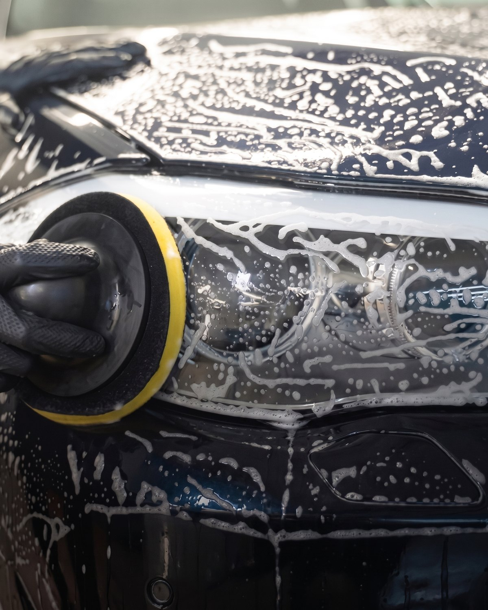
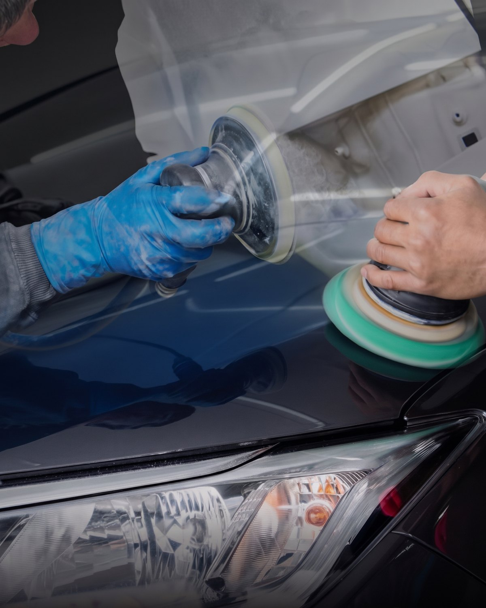
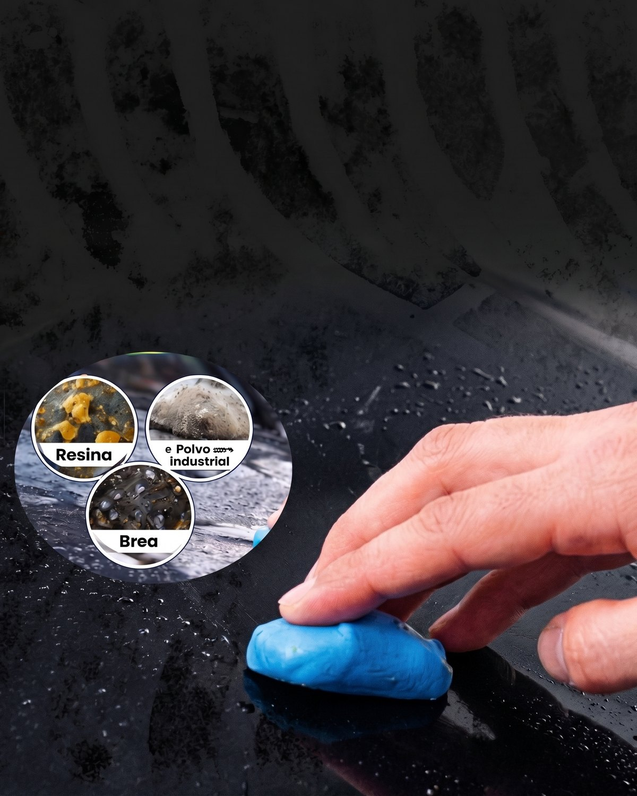
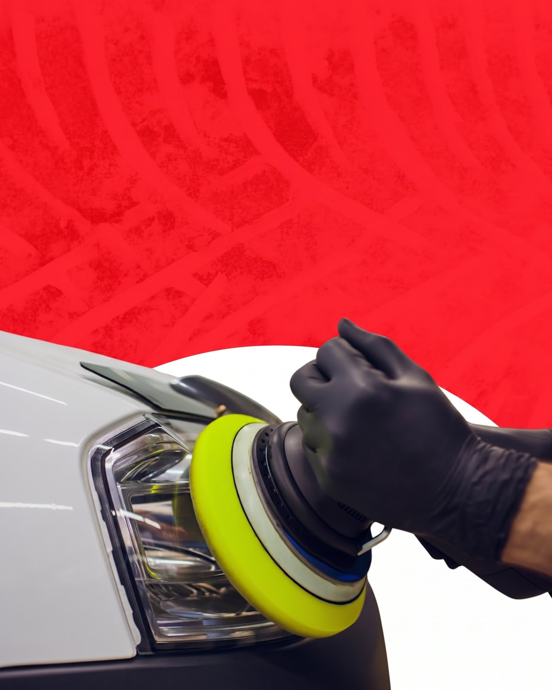
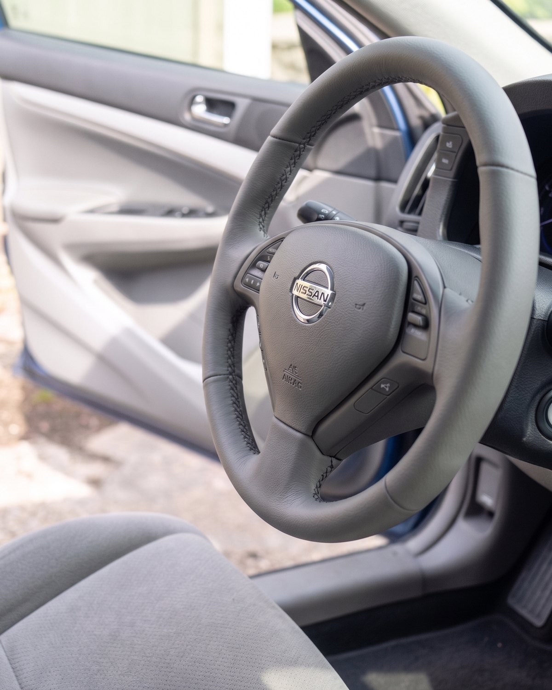

Inicio / Detailing
Un tratamiento completo que recupera el brillo, elimina imperfecciones de la pintura y protege la superficie del auto. Trabajamos el vehículo por dentro y por fuera, con productos profesionales de primeras marcas, hasta dejarlo como nuevo.
El paquete completo: lavado técnico, descontaminación, corrección de pintura, tratamiento de plásticos y limpieza profunda de interior. Ideal antes de vender el auto o para devolverle el aspecto de cero kilómetro.

¿Tu vehículo perdió ese efecto espejo que lo hacía destacar? Con pulidora orbital y compuestos profesionales eliminamos rayones finos, marcas de lavado y opacidad, devolviéndole profundidad al color.

El secreto de un acabado perfecto. Antes de pulir sacamos todo lo que el lavado no levanta: resina de árboles, brea del asfalto y polvo industrial incrustado en el barniz.

¡Volvé a iluminar el camino! Recuperamos la transparencia y el brillo original de tus faros amarillentos u opacos. Más luz de noche y un frente que se ve nuevo.

Devolvéle la vida a tu volante. Restauramos el cuero o el símil desgastado por el uso, recuperando textura y color sin tener que cambiar la pieza.

Revisamos el estado real de la pintura y del interior, y te decimos qué conviene hacer.
Te pasamos el precio cerrado por WhatsApp, sin sorpresas ni adicionales.
Hacemos el proceso completo en el taller, con productos profesionales.
Te mostramos el antes y el después y te explicamos cómo mantenerlo.
Depende del estado y del tamaño del vehículo. Un detailing integral suele llevar entre uno y dos días de trabajo; los servicios puntuales, como el pulido de ópticas, se hacen en el día.
Saca los rayones superficiales y las marcas de lavado. Si el rayón llega a la base o al metal, hace falta pintura; en ese caso te lo decimos de entrada.
Sí. Coordinamos el turno por WhatsApp y te avisamos cuando está listo.
Con el sellado protector y un lavado cuidado, el brillo se mantiene varios meses. Te damos las indicaciones de mantenimiento en la entrega.
Mandanos una foto por WhatsApp y te decimos qué necesita y cuánto sale.
Pedir turno por WhatsApp